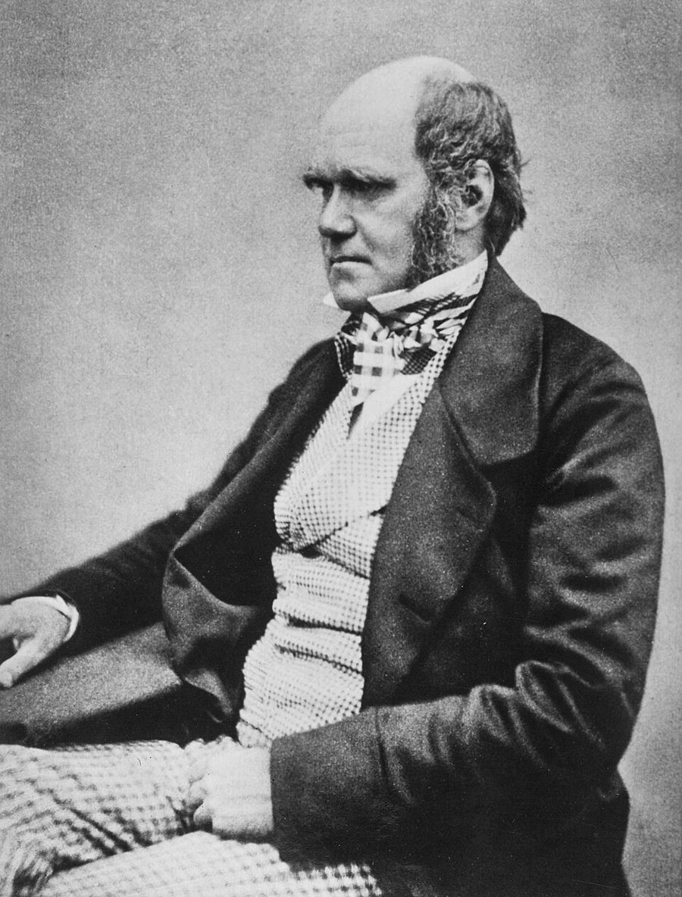
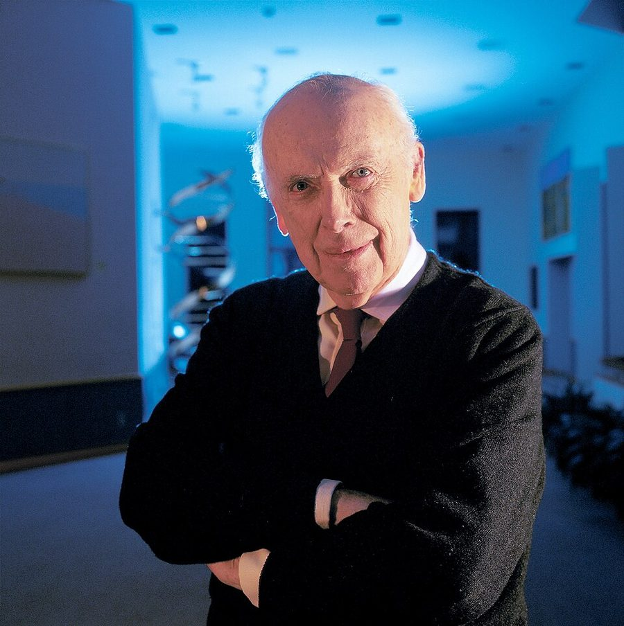
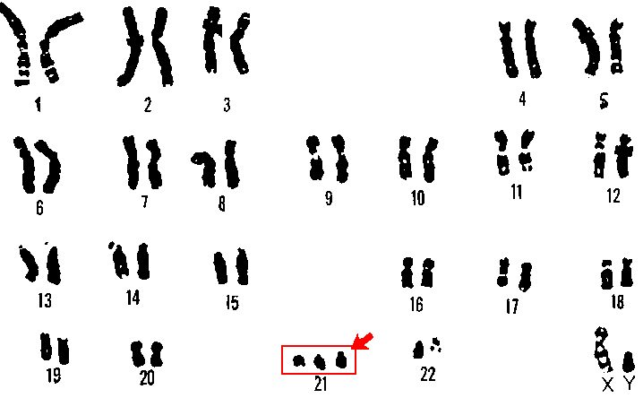

Al seleccionar las plantas y los animales más útiles, los primeros agricultores y ganaderos cambiaron, sin saberlo, sus genes.
Leer más
En el Creciente Fértil, Mesoamérica, China o los Andes, generaciones de agricultores guardaron las semillas de las plantas que no dejaban caer el grano o que daban frutos más grandes. El teosinte, una hierba de granos duros, se convirtió en maíz; el lobo dio lugar al perro. Hoy sabemos que detrás de esos cambios hay unos pocos genes de gran efecto, como tb1 en el maíz. Fue la primera «ingeniería genética», hecha a ciegas durante miles de años.

Imagen: Charles_Darwin_seated.jpg: Henry Maull (1829–1914) and John Fox (1832–1907) (Maull & Fox) [3] derivative work: Beao · Dominio público · Wikimedia Commons1859
Darwin y la variación
En El origen de las especies, Charles Darwin explica la evolución por selección natural, pero le falta una teoría de la herencia.
Leer más
Darwin sabía que los hijos se parecen a los padres y que existen pequeñas variaciones, la materia prima de la selección. Pero creía, como casi todos, en una «herencia por mezcla», en la que los rasgos de los padres se diluyen como pinturas. Esa idea era un problema: una variación ventajosa se perdería en pocas generaciones. Su propia hipótesis, la pangénesis (1868), resultó equivocada. La solución estaba ya publicada en una revista de Brno que él nunca leyó.
Imagen: Autor desconocido · Dominio público · Wikimedia Commons1865-1866
Mendel y los guisantes
Gregor Mendel describe las reglas de la herencia. Su trabajo pasa casi inadvertido durante 34 años.
Leer más
Tras ocho años de cruces con unas 28.000 plantas de guisante, Mendel mostró que los rasgos se heredan como unidades enteras («factores») que vienen en parejas y se separan al formar las células sexuales, con proporciones predecibles como 3:1. Usó por primera vez estadística en biología. Su artículo de 1866 se citó muy poco, en parte porque su enfoque matemático era extraño para los botánicos de su tiempo. Ficha de Mendel.
Friedrich Miescher aísla de los núcleos de los glóbulos blancos una sustancia que llama «nucleína».
Leer más
En Tubinga, el joven médico suizo lavó vendas con pus de un hospital cercano para obtener leucocitos, y de sus núcleos extrajo una sustancia rica en fósforo y resistente a las enzimas que digieren proteínas. Era el ADN. Albrecht Kossel identificó después sus cuatro bases (Nobel en 1910), y Phoebus Levene describió cómo se unen azúcar, fosfato y base. Pero durante décadas se pensó que era una molécula demasiado simple para guardar información. Ficha de Miescher.
De Vries, Correns y Tschermak llegan por separado a resultados parecidos y rescatan a Mendel.
Leer más
Los tres botánicos encontraron proporciones mendelianas en sus propios cruces y, al revisar la bibliografía, dieron con el artículo de 1866. El británico William Bateson se convirtió en el gran defensor de Mendel y tradujo su trabajo al inglés. En pocos años se comprobó que las mismas reglas valían para gallinas, ratones y personas. Comenzaba el siglo de la genética.
Archibald Garrod describe la alcaptonuria como el primer rasgo humano que sigue las leyes de Mendel.
Leer más
Garrod, médico en Londres, observó que la alcaptonuria (orina que se oscurece al aire) era más frecuente en hijos de primos y que se comportaba como un rasgo recesivo. En 1908 acuñó la expresión errores congénitos del metabolismo: un gen defectuoso provoca la falta de una enzima, y una sustancia se acumula. Fue la primera idea de que los genes dirigen la química del cuerpo, cuarenta años antes de que se aceptara. Ficha de Garrod.
Bateson propone la palabra «genética» y Johannsen, las palabras «gen», «genotipo» y «fenotipo».
Leer más
Nombrar las cosas ayudó a pensarlas. Wilhelm Johannsen, estudiando judías, distinguió entre lo que se hereda (el genotipo) y lo que se ve (el fenotipo), que depende también del ambiente. Eligió «gen» como una palabra neutra, sin compromiso sobre su naturaleza física, que nadie conocía todavía.
Imagen: Autor desconocido · Dominio público · Wikimedia Commons1910-1915
Las moscas de Morgan
Thomas Hunt Morgan demuestra que los genes están en los cromosomas.
Leer más
En la «sala de las moscas» de la Universidad de Columbia, Morgan encontró en 1910 un macho de ojos blancos entre miles de moscas de ojos rojos. El rasgo se heredaba ligado al sexo, lo que solo se explicaba si el gen estaba en el cromosoma X. Su alumno Alfred Sturtevant, con 19 años, usó la frecuencia con que dos rasgos se separaban para dibujar en 1913 el primer mapa genético. Morgan recibió el Nobel en 1933. Ficha de Morgan.
Con una mala interpretación de la genética, muchos países aplican políticas de esterilización forzosa.
Leer más
Francis Galton había acuñado «eugenesia» en 1883. A comienzos del siglo XX se extendió la idea de «mejorar la raza» impidiendo reproducirse a personas consideradas «no aptas». Más de 60.000 personas fueron esterilizadas a la fuerza en Estados Unidos, y miles en Suecia, Suiza o Canadá. La Alemania nazi esterilizó a unas 400.000 y asesinó a decenas de miles de personas con discapacidad antes del Holocausto. Es una advertencia permanente: la genética mal usada puede justificar crímenes.
1928
El experimento de Griffith
Frederick Griffith observa que una bacteria inofensiva puede volverse peligrosa al recibir «algo» de otra muerta.
Leer más
Griffith, médico de salud pública británico, buscaba una vacuna contra la neumonía. Al mezclar neumococos virulentos muertos con otros inofensivos vivos, los ratones morían y de ellos se recuperaban bacterias virulentas vivas, que además transmitían el cambio a su descendencia. Lo llamó «principio transformante». Murió en 1941 en un bombardeo de Londres, sin saber qué era.
George Beadle y Edward Tatum demuestran que cada gen controla una enzima.
Leer más
Con el moho del pan Neurospora, irradiado con rayos X, obtuvieron mutantes que no podían fabricar una sustancia concreta, y cada uno tenía alterada una sola enzima. Confirmaban la intuición de Garrod y conectaban por fin la genética con la bioquímica. Recibieron el Nobel en 1958.
Avery, MacLeod y McCarty demuestran que el principio transformante es el ADN.
Leer más
En el Instituto Rockefeller purificaron el extracto de Griffith y comprobaron que, si se destruían las proteínas o el ARN, la transformación seguía, pero si se destruía el ADN desaparecía. Muchos siguieron creyendo durante años que los genes eran proteínas. Ficha de Avery · La historia en el blog.
Imagen: Smithsonian Institution/Science Service; Restored by Adam Cuerden · Dominio público · Wikimedia Commons1948-1951
Los genes saltarines
Barbara McClintock descubre en el maíz elementos que cambian de sitio en el genoma.
Leer más
Observando los granos de colores del maíz y sus cromosomas al microscopio, McClintock vio que ciertos fragmentos de ADN se movían y encendían o apagaban genes cercanos. Su idea de un genoma dinámico chocó con la visión de los genes como cuentas fijas en un collar. Hoy sabemos que los transposones forman casi la mitad del genoma humano. Recibió el Nobel, sola, en 1983. Ficha de McClintock.
Erwin Chargaff observa que en el ADN la cantidad de A es igual a la de T, y la de G igual a la de C.
Leer más
Con cromatografía en papel, Chargaff midió las bases del ADN de muchas especies. La composición variaba de una especie a otra, lo que desmentía que el ADN fuera una molécula monótona, pero siempre A = T y G = C. La explicación de esta regla llegaría con el emparejamiento de bases de la doble hélice. Ficha de Chargaff.
Linus Pauling describe la hélice alfa de las proteínas y demuestra el poder de los modelos.
Leer más
Pauling construyó modelos con las distancias y ángulos exactos de los átomos y predijo la hélice alfa, una de las formas básicas de las proteínas. Watson y Crick tomaron su método. En 1953 Pauling propuso un modelo de ADN de tres hebras, que era erróneo. En 1949 también había demostrado que la anemia falciforme se debe a una hemoglobina distinta: la primera «enfermedad molecular». Ficha de Pauling.
Hershey y Chase confirman que el ADN dirige a los virus; Franklin y Gosling obtienen la «foto 51».
Leer más
Alfred Hershey y Martha Chase marcaron con radiactividad el ADN y las proteínas de un virus de bacterias: solo el ADN entraba en la célula. Ese mismo año, en el King's College de Londres, Rosalind Franklin y Raymond Gosling obtuvieron la imagen de difracción de rayos X que mostraba una hélice. Ficha de Franklin · La foto 51.

Imagen: James_D_Watson_Genome_Image.jpg: Cold Spring Harbor Laboratory derivative work: Jan Arkesteijn (talk) · Copyrighted free use · Wikimedia Commons1953
La doble hélice
James Watson y Francis Crick proponen la estructura en doble hélice del ADN.
Leer más
El 25 de abril de 1953 Nature publicó el artículo de una página de Watson y Crick junto a los de Wilkins y de Franklin y Gosling. Las dos hebras enrolladas, con A frente a T y G frente a C, sugerían de inmediato cómo se copia el ADN. En 1958 Meselson y Stahl demostraron que la copia es semiconservativa. El Nobel de 1962 fue para Watson, Crick y Wilkins; Franklin había muerto en 1958. Watson · Crick · Wilkins.

Imagen: U.S. Department of Energy Human Genome Program. · Dominio público · Wikimedia Commons1956
46 cromosomas
Joe Hin Tjio y Albert Levan establecen que las células humanas tienen 46 cromosomas.
Leer más
Durante treinta años los libros dijeron que eran 48. En Lund (Suecia), Tjio mejoró las técnicas: tratar las células con una solución que las hincha y con colchicina, que detiene la división, separó bien los cromosomas y permitió contarlos. Nacía la citogenética humana moderna.
Imagen: U.S. Department of Energy Human Genome Program. · Dominio público · Wikimedia Commons1959
Primera enfermedad cromosómica
Lejeune, Gautier y Turpin descubren que el síndrome de Down se debe a un cromosoma 21 de más.
Leer más
Marthe Gautier montó en París el laboratorio de cultivo celular y obtuvo las preparaciones; Jérôme Lejeune las fotografió y presentó el hallazgo. Ese mismo año se describieron los cariotipos de los síndromes de Turner (45,X) y Klinefelter (47,XXY). Décadas después, Gautier reivindicó su papel, minimizado en la historia oficial. Ficha de Gautier.
Severo Ochoa recibe el Nobel por la síntesis del ARN en el laboratorio.
Leer más
El bioquímico asturiano descubrió en Nueva York la polinucleótido fosforilasa, una enzima que permitía fabricar ARN artificial. Esa herramienta fue clave para que Nirenberg y el propio grupo de Ochoa descifraran el código genético. Ochoa formó a científicos como Margarita Salas y Eladio Viñuela. Ficha de Ochoa.
Se averigua qué aminoácido corresponde a cada codón de tres letras.
Leer más
En 1961 Marshall Nirenberg y Heinrich Matthaei añadieron un ARN artificial hecho solo de U (poli-U) a un extracto de bacterias y obtuvieron una proteína hecha solo de fenilalanina: UUU = fenilalanina. Ese mismo año Crick y Brenner demostraron que el código se lee de tres en tres. Har Gobind Khorana, Ochoa y otros completaron la tabla en 1966. Nirenberg, Khorana y Holley recibieron el Nobel en 1968. Ficha de Nirenberg.
François Jacob y Jacques Monod describen el operón lac, el primer interruptor genético.
Leer más
En el Instituto Pasteur explicaron cómo la bacteria E. coli enciende los genes para digerir la lactosa solo cuando hay lactosa: una proteína represora bloquea el gen hasta que el azúcar la retira. También propusieron la existencia del ARN mensajero. Fue el comienzo del estudio de la regulación génica, clave para entender por qué cada célula usa genes distintos. Nobel en 1965.
Robert Guthrie inventa una prueba sencilla para detectar la fenilcetonuria en todos los recién nacidos.
Leer más
Guthrie, microbiólogo con un hijo y una sobrina con discapacidad intelectual, ideó un análisis con bacterias que detectaba el exceso de fenilalanina en una gota de sangre seca sobre papel. Permitió tratar con dieta desde el nacimiento y evitar el daño cerebral. La «tarjeta de Guthrie» es la base de todos los programas de cribado neonatal actuales. Ficha de Guthrie.
Imagen: National Library of Medicine · Dominio público · Wikimedia Commons1966
El catálogo de McKusick
Victor McKusick publica Mendelian Inheritance in Man, el catálogo de las enfermedades hereditarias.
Leer más
La primera edición recogía unos 1.500 rasgos. Hoy, en su versión en línea, OMIM, describe más de 16.000 genes y miles de enfermedades. McKusick es considerado el padre de la genética médica. Ficha de McKusick.
Imagen: Autor desconocido · Dominio público · Wikimedia Commons1972-1975
ADN recombinante y Asilomar
Berg, Cohen y Boyer logran cortar y pegar ADN de distintos organismos. Los científicos se autorregulan en Asilomar.
Leer más
Paul Berg unió en 1972 ADN de dos virus; en 1973 Stanley Cohen y Herbert Boyer introdujeron un gen ajeno en bacterias que lo copiaban. Ante los posibles riesgos, los propios investigadores pidieron una moratoria y en 1975 se reunieron en Asilomar (California) para fijar normas de seguridad, un ejemplo pionero de responsabilidad científica. En 1982 se aprobó la primera insulina humana fabricada por bacterias. Ficha de Berg.
Frederick Sanger desarrolla un método para leer el ADN letra a letra.
Leer más
El método de los didesoxinucleótidos, que detiene la copia del ADN en cada letra, fue el estándar durante 30 años y sirvió para leer el primer genoma humano. Sanger ya había ganado un Nobel en 1958 por secuenciar la insulina; en 1980 recibió el segundo, compartido con Berg y Walter Gilbert. Ficha de Sanger.
Kary Mullis inventa la reacción en cadena de la polimerasa.
Leer más
Según contó, la idea se le ocurrió conduciendo de noche por California: calentar y enfriar el ADN en ciclos para que una enzima lo copie una y otra vez, duplicándolo en cada ciclo. Con una polimerasa resistente al calor, de una bacteria de aguas termales, la técnica se automatizó. Hoy es básica en diagnóstico, medicina forense e investigación. Nobel de Química en 1993. Ficha de Mullis.
Se localiza el gen de la enfermedad de Huntington en el cromosoma 4, gracias a las familias de Venezuela.
Leer más
Nancy Wexler, cuya madre tenía la enfermedad, organizó el estudio de grandes familias a orillas del lago de Maracaibo. Con marcadores de ADN, el grupo de James Gusella situó el gen en el cromosoma 4 en 1983. El gen, HTT, y su expansión CAG se identificaron en 1993. Fue el primer gen de una enfermedad localizado así, sin saber qué proteína fabricaba. Ficha de Wexler.
Alec Jeffreys descubre que el ADN permite identificar a las personas.
Leer más
En Leicester, una mañana de septiembre de 1984, Jeffreys vio en una radiografía un patrón de bandas distinto en cada persona. En 1986 se usó por primera vez en un caso criminal: exculpó a un sospechoso y permitió condenar al verdadero autor de dos asesinatos. Desde entonces ha resuelto casos de paternidad, inmigración e identificación de víctimas. Ficha de Jeffreys.
Margarita Salas descubre en Madrid una enzima que copia ADN largo con gran precisión.
Leer más
Estudiando un virus de bacterias, el grupo de Salas encontró una polimerasa capaz de copiar fragmentos muy largos de ADN sin soltarse. Patentada por el CSIC, se usa en todo el mundo para amplificar ADN a partir de cantidades mínimas, y fue la patente más rentable de la historia del organismo. Ficha de Salas.
Se identifica el gen de la fibrosis quística y se localiza el primer gen de cáncer de mama hereditario.
Leer más
En 1989, los equipos de Lap-Chee Tsui, Francis Collins y John Riordan encontraron el gen CFTR y la variante F508del. En 1990, Mary-Claire King demostró con estudios de familias que existía un gen de cáncer de mama hereditario en el cromosoma 17, que se aisló en 1994 (BRCA1). Tsui · King · Collins.
Imagen: National Institutes of Health, United States Department of Health and Human Services · Dominio público · Wikimedia Commons1990
Proyecto Genoma y primera terapia génica
Arranca el Proyecto Genoma Humano y Ashanti DeSilva recibe la primera terapia génica autorizada.
Leer más
El Proyecto Genoma Humano se planteó leer los 3.000 millones de letras en 15 años, con un 3-5 % del presupuesto dedicado a sus implicaciones éticas, legales y sociales. Ese mismo año, Ashanti DeSilva, de 4 años, recibió sus propios linfocitos con una copia sana del gen ADA. También en 1990 nacieron los primeros bebés tras un diagnóstico genético preimplantacional, en Londres.
Nace en Escocia Dolly, el primer mamífero clonado a partir de una célula adulta.
Leer más
Ian Wilmut y Keith Campbell, en el Instituto Roslin, transfirieron el núcleo de una célula de la ubre de una oveja a un óvulo sin núcleo. Dolly demostró que una célula adulta conserva toda la información para formar un organismo. El anuncio, en 1997, abrió un intenso debate sobre la clonación humana, que la mayoría de los países prohibió.
Se publican los primeros borradores (2001) y se completa el Proyecto Genoma Humano (2003).
Leer más
El consorcio público, liderado por Francis Collins y con John Sulston como gran defensor del acceso abierto, compitió con la empresa Celera de Craig Venter. En junio de 2000 ambos presentaron juntos un primer borrador en la Casa Blanca. La gran sorpresa fue el número de genes: unos 20.000, muchos menos de lo esperado. Collins · Venter.
Francisco Mojica propone que las secuencias CRISPR de las bacterias son un sistema de defensa contra virus.
Leer más
Desde 1993 Mojica estudiaba en Santa Pola unas extrañas repeticiones en el ADN de arqueas de las salinas. Comparando secuencias, vio que los espaciadores coincidían con fragmentos de virus y dedujo que eran una memoria inmunitaria. Le costó publicarlo: varias revistas lo rechazaron. También acuñó, con Ruud Jansen, el nombre CRISPR. Ficha de Mojica.
Las nuevas tecnologías leen millones de fragmentos a la vez y el precio del genoma se desploma.
Leer más
Las plataformas de «nueva generación» multiplicaron la capacidad de lectura. En 2008 se publicaron los primeros genomas individuales completos, como el de James Watson. El coste de un genoma pasó de unos 100 millones de dólares en 2001 a menos de 1.000 hacia 2020. Esto abrió la puerta a los paneles, el exoma y el genoma en la práctica clínica.
Svante Pääbo publica el genoma del neandertal y demuestra que los humanos actuales llevamos parte de su ADN.
Leer más
Con técnicas para recuperar ADN antiguo muy degradado, el equipo de Pääbo, en Leipzig, mostró que las personas de fuera de África tienen alrededor de un 2 % de ADN neandertal. Ese mismo año identificó a los denisovanos a partir de un hueso de un dedo. Recibió el Nobel de Fisiología o Medicina en 2022. Ficha de Pääbo.
Charpentier y Doudna demuestran que CRISPR-Cas9 puede programarse para cortar el ADN donde se quiera.
Leer más
Su artículo en Science mostró que bastaba con cambiar un ARN guía para dirigir a Cas9. En 2013, Feng Zhang, George Church y otros lo aplicaron en células humanas. En pocos años se convirtió en la herramienta estándar de los laboratorios. Nobel de Química en 2020. Charpentier · Doudna · CRISPR explicado.
He Jiankui anuncia el nacimiento de dos niñas con embriones editados.
Leer más
La comunidad científica lo condenó casi por unanimidad: no había necesidad médica, la edición fue imprecisa y el consentimiento, deficiente. Fue condenado a tres años de prisión en China. El caso aceleró las normas internacionales contra la edición hereditaria. Ética de la edición genética.
El consorcio Telomere-to-Telomere publica la primera secuencia completa de un genoma humano, sin huecos.
Leer más
Gracias a la secuenciación de lectura larga, se leyeron por fin los centrómeros y otras regiones muy repetitivas que faltaban, alrededor del 8 % del genoma. Se añadieron unos 200 millones de pares de bases y cerca de 100 genes codificantes nuevos. El cromosoma Y completo llegó en 2023.
Se presenta el pangenoma humano y el Reino Unido autoriza el primer tratamiento basado en CRISPR.
Leer más
El primer borrador del pangenoma reunió genomas de 47 personas de orígenes diversos para representar mejor la variedad humana. En noviembre, el Reino Unido autorizó el exagamglogén autotemcel para la anemia falciforme y la beta-talasemia; Estados Unidos y la Unión Europea lo hicieron poco después.
Un bebé con una enfermedad metabólica rara recibe el primer editor de bases diseñado solo para él.
Leer más
En Filadelfia, un equipo diseñó y fabricó en unos seis meses un tratamiento de edición de bases para corregir la variante de KJ, un bebé con déficit grave de CPS1. Abrió la puerta a terapias personalizadas para enfermedades ultrarraras, con grandes retos de regulación y coste. CRISPR explicado.
Fuentes
Mukherjee, S. (2016). El gen: una historia personal. Debate.
Portin, P. y Wilkins, A. (2017). The evolving definition of the term «gene». Genetics, 205, 1353–1364.
Cobb, M. (2015). Life's Greatest Secret: The Race to Crack the Genetic Code. Profile Books.
National Human Genome Research Institute. Timeline of Genetics. genome.gov.
The Nobel Prize. Premios de Fisiología o Medicina (1933, 1962, 1968) y de Química (1980, 2020). nobelprize.org.
Avery, O. T., MacLeod, C. M. y McCarty, M. (1944). Studies on the chemical nature of the substance inducing transformation of pneumococcal types. Journal of Experimental Medicine, 79, 137–158.
Watson, J. D. y Crick, F. H. C. (1953). Molecular structure of nucleic acids. Nature, 171, 737–738; Franklin, R. E. y Gosling, R. G. (1953). Nature, 171, 740–741.
Kevles, D. J. (1985). In the Name of Eugenics. Harvard University Press.
Texto: Alejandro Rosàs, médico de familia · Actualizado: 2026-11-20